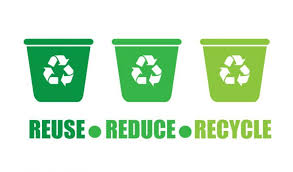

En estos últimos años, nuestro Planeta Tierra no fue cuidado y valorado como debería. Los seres humanos somos responsables de esta conducta. Es por esta razón que el planeta está muy contaminado. Por ello, nuestro objetivo es concientizar a la población acerca de este problema del cual muchos no le dan importancia, pero traerá consecuencias graves en el futuro. Una solución a este desastre es el reciclaje. ¡Vamos a ver de qué se trata!
